pacman::p_load(igraph, tidygraph, ggraph, visNetwork, lubridate, clock,
tidyverse, graphlayouts, concaveman, ggforce)Modelling, Visualising and Analysing Network Data with R
1 Learning Objectives
- create graph object data frames, manipulate them using appropriate functions of dplyr, lubridate, and tidygraph,
- build network graph visualisation using appropriate functions of ggraph,
- compute network geometrics using tidygraph,
- build advanced graph visualisation by incorporating the network geometrics, and
- build interactive network visualisation using visNetwork package.
2 Getting Started
2.1 Installing and launching R packages
The following four network data modelling and visualising packages will be instlled and launched: igraph, tidygraph, ggraph and visNetwork. Beside these four packages, tidyverse and lubridate, an R package specially designed to handle and wrangle time data will be installed and launched too.
3 The Data
The data sets used in this hands-on exercise is from an oil exploration and extraction company. There are two data sets. One contains the nodes data and the other contains the edges (also know as link) data.
GAStech-email_edges.csv which consists of two weeks of 9063 emails correspondances between 55 employees.
GAStech_email_nodes.csv which consist of the names, department and title of the 55 employees.
The following code chunk reads in the data into R environment.
GAStech_nodes <- read_csv("data/GAStech_email_node.csv")Rows: 54 Columns: 4
── Column specification ────────────────────────────────────────────────────────
Delimiter: ","
chr (3): label, Department, Title
dbl (1): id
ℹ Use `spec()` to retrieve the full column specification for this data.
ℹ Specify the column types or set `show_col_types = FALSE` to quiet this message.GAStech_edges <- read_csv("data/GAStech_email_edge-v2.csv")Rows: 9063 Columns: 8
── Column specification ────────────────────────────────────────────────────────
Delimiter: ","
chr (5): SentDate, Subject, MainSubject, sourceLabel, targetLabel
dbl (2): source, target
time (1): SentTime
ℹ Use `spec()` to retrieve the full column specification for this data.
ℹ Specify the column types or set `show_col_types = FALSE` to quiet this message.We then review the data using glimpse() from dplyr package.
glimpse(GAStech_edges)Rows: 9,063
Columns: 8
$ source <dbl> 43, 43, 44, 44, 44, 44, 44, 44, 44, 44, 44, 44, 26, 26, 26…
$ target <dbl> 41, 40, 51, 52, 53, 45, 44, 46, 48, 49, 47, 54, 27, 28, 29…
$ SentDate <chr> "6/1/2014", "6/1/2014", "6/1/2014", "6/1/2014", "6/1/2014"…
$ SentTime <time> 08:39:00, 08:39:00, 08:58:00, 08:58:00, 08:58:00, 08:58:0…
$ Subject <chr> "GT-SeismicProcessorPro Bug Report", "GT-SeismicProcessorP…
$ MainSubject <chr> "Work related", "Work related", "Work related", "Work rela…
$ sourceLabel <chr> "Sven.Flecha", "Sven.Flecha", "Kanon.Herrero", "Kanon.Herr…
$ targetLabel <chr> "Isak.Baza", "Lucas.Alcazar", "Felix.Resumir", "Hideki.Coc…
Warning
The output report of GAStech_edges above reveals that the SentDate is treated as “Character” data type instead of date data type. Before we continue, it is important for us to change the data type of SentDate field back to “Date”” data type.
glimpse(GAStech_nodes)Rows: 54
Columns: 4
$ id <dbl> 1, 2, 3, 4, 5, 6, 7, 44, 45, 46, 8, 9, 10, 11, 12, 13, 14, …
$ label <chr> "Mat.Bramar", "Anda.Ribera", "Rachel.Pantanal", "Linda.Lago…
$ Department <chr> "Administration", "Administration", "Administration", "Admi…
$ Title <chr> "Assistant to CEO", "Assistant to CFO", "Assistant to CIO",…3.1 Wrangling time
The following code chunk corrects the data type of SendDate and creates column Weekday
GAStech_edges <- GAStech_edges %>%
mutate(SendDate = dmy(SentDate)) %>%
mutate(Weekday = wday(SentDate,
label = TRUE,
abbr = FALSE))
Tip
- both dmy() and wday() are functions of lubridate package. lubridate is an R package that makes it easier to work with dates and times.
- dmy() transforms the SentDate to Date data type.
- wday() returns the day of the week as a decimal number or an ordered factor if label is TRUE. The argument abbr is FALSE keep the daya spells in full, i.e. Monday. The function will create a new column in the data.frame i.e. Weekday and the output of wday() will save in this newly created field.
- the values in the Weekday field are in ordinal scale.
3.2 Reviewing the revised date fields
Table below shows the data structure of the reformatted GAStech_edges data frame
glimpse(GAStech_edges)Rows: 9,063
Columns: 10
$ source <dbl> 43, 43, 44, 44, 44, 44, 44, 44, 44, 44, 44, 44, 26, 26, 26…
$ target <dbl> 41, 40, 51, 52, 53, 45, 44, 46, 48, 49, 47, 54, 27, 28, 29…
$ SentDate <chr> "6/1/2014", "6/1/2014", "6/1/2014", "6/1/2014", "6/1/2014"…
$ SentTime <time> 08:39:00, 08:39:00, 08:58:00, 08:58:00, 08:58:00, 08:58:0…
$ Subject <chr> "GT-SeismicProcessorPro Bug Report", "GT-SeismicProcessorP…
$ MainSubject <chr> "Work related", "Work related", "Work related", "Work rela…
$ sourceLabel <chr> "Sven.Flecha", "Sven.Flecha", "Kanon.Herrero", "Kanon.Herr…
$ targetLabel <chr> "Isak.Baza", "Lucas.Alcazar", "Felix.Resumir", "Hideki.Coc…
$ SendDate <date> 2014-01-06, 2014-01-06, 2014-01-06, 2014-01-06, 2014-01-0…
$ Weekday <ord> Friday, Friday, Friday, Friday, Friday, Friday, Friday, Fr…3.3 Wrangling attributes
A close examination of GAStech_edges data.frame reveals that it consists of individual e-mail flow records. This is not very useful for visualisation.
In view of this, we will aggregate the individual by date, senders, receivers, main subject and day of the week using the code chunk below.
GAStech_edges_aggregated <- GAStech_edges %>%
filter(MainSubject == "Work related") %>%
group_by(source, target, Weekday) %>%
summarise(Weight = n()) %>%
filter(source!=target) %>%
filter(Weight > 1) %>%
ungroup()`summarise()` has grouped output by 'source', 'target'. You can override using
the `.groups` argument.
Tip
- four functions from dplyr package are used. They are: filter(), group(), summarise(), and ungroup().
- The output data.frame is called GAStech_edges_aggregated.
- A new field called Weight has been added in GAStech_edges_aggregated.
The following code chunk reviews the final edges table
glimpse(GAStech_edges_aggregated)Rows: 1,372
Columns: 4
$ source <dbl> 1, 1, 1, 1, 1, 1, 1, 1, 1, 1, 1, 1, 1, 1, 1, 1, 1, 1, 1, 1, 1,…
$ target <dbl> 2, 2, 2, 2, 2, 3, 3, 3, 3, 3, 4, 4, 4, 4, 4, 5, 5, 5, 5, 5, 6,…
$ Weekday <ord> Sunday, Monday, Tuesday, Wednesday, Friday, Sunday, Monday, Tu…
$ Weight <int> 5, 2, 3, 4, 6, 5, 2, 3, 4, 6, 5, 2, 3, 4, 6, 5, 2, 3, 4, 6, 5,…4 Creating network objects using tidygraph
In this section, we will create a graph data model by using tidygraph package. It provides a tidy API for graph/network manipulation. While network data itself is not tidy, it can be envisioned as two tidy tables, one for node data and one for edge data. tidygraph provides a way to switch between the two tables and provides dplyr verbs for manipulating them. Furthermore it provides access to a lot of graph algorithms with return values that facilitate their use in a tidy workflow.
4.1 The tbl_graph object
Two functions of tidygraph package can be used to create network objects, they are:
tbl_graph()creates a tbl_graph network object from nodes and edges data.as_tbl_graph()converts network data and objects to a tbl_graph network. Below are network data and objects supported byas_tbl_graph()a node data.frame and an edge data.frame,
data.frame, list, matrix from base,
igraph from igraph,
network from network,
dendrogram and hclust from stats,
Node from data.tree,
phylo and evonet from ape, and
graphNEL, graphAM, graphBAM from graph (in Bioconductor).
4.2 The dplyr verbs in tidygraph
- activate() verb from tidygraph serves as a switch between tibbles for nodes and edges. All dplyr verbs applied to tbl_graph object are applied to the active tibble.
- In the above the .N() function is used to gain access to the node data while manipulating the edge data. Similarly .E() will give you the edge data and .G() will give you the tbl_graph object itself.
4.3 Using tbl_graph() to build tidygraph data model.
The code chunk below uses tbl_graph() of tinygraph package to build an tidygraph’s network graph data.frame.
GAStech_graph <- tbl_graph(nodes = GAStech_nodes,
edges = GAStech_edges_aggregated,
directed = TRUE)We then review the graph output
glimpse(GAStech_graph)── Nodes ───────────────────────────────────────────────────────────────────────Rows: 54
Columns: 4
$ id <dbl> 1, 2, 3, 4, 5, 6, 7, 44, 45, 46, 8, 9, 10, 11, 12, 13, 14, …
$ label <chr> "Mat.Bramar", "Anda.Ribera", "Rachel.Pantanal", "Linda.Lago…
$ Department <chr> "Administration", "Administration", "Administration", "Admi…
$ Title <chr> "Assistant to CEO", "Assistant to CFO", "Assistant to CIO",…── Edges ───────────────────────────────────────────────────────────────────────Rows: 1,372
Columns: 4
$ from <int> 1, 1, 1, 1, 1, 1, 1, 1, 1, 1, 1, 1, 1, 1, 1, 1, 1, 1, 1, 1, 1,…
$ to <int> 2, 2, 2, 2, 2, 3, 3, 3, 3, 3, 4, 4, 4, 4, 4, 5, 5, 5, 5, 5, 6,…
$ Weekday <ord> Sunday, Monday, Tuesday, Wednesday, Friday, Sunday, Monday, Tu…
$ Weight <int> 5, 2, 3, 4, 6, 5, 2, 3, 4, 6, 5, 2, 3, 4, 6, 5, 2, 3, 4, 6, 5,…- The output above reveals that GAStech_graph is a tbl_graph object with 54 nodes and 4541 edges.
- The command also prints the first six rows of “Node Data” and the first three of “Edge Data”.
- It states that the Node Data is active. The notion of an active tibble within a tbl_graph object makes it possible to manipulate the data in one tibble at a time.
4.4 Changing the active object
The nodes tibble data frame is activated by default, but which tibble data frame is active can be changed with the activate() function. Thus, if we wanted to rearrange the rows in the edges tibble to list those with the highest “weight” first, we could use activate() and then arrange().
GAStech_graph %>%
activate(edges) %>%
arrange(desc(Weight))# A tbl_graph: 54 nodes and 1372 edges
#
# A directed multigraph with 1 component
#
# Edge Data: 1,372 × 4 (active)
from to Weekday Weight
<int> <int> <ord> <int>
1 40 41 Saturday 13
2 41 43 Monday 11
3 35 31 Tuesday 10
4 40 41 Monday 10
5 40 43 Monday 10
6 36 32 Sunday 9
7 40 43 Saturday 9
8 41 40 Monday 9
9 19 15 Wednesday 8
10 35 38 Tuesday 8
# ℹ 1,362 more rows
#
# Node Data: 54 × 4
id label Department Title
<dbl> <chr> <chr> <chr>
1 1 Mat.Bramar Administration Assistant to CEO
2 2 Anda.Ribera Administration Assistant to CFO
3 3 Rachel.Pantanal Administration Assistant to CIO
# ℹ 51 more rows5 Plotting Static Network Graphs with ggraph package
ggraph is an extension of ggplot2, making it easier to carry over basic ggplot skills to the design of network graphs.
As in all network graph, there are three main aspects to a ggraph’s network graph, they are:
For a comprehensive discussion of each of this aspect of graph, please refer to their respective vignettes provided.
5.1 Plotting a basic network graph
The code chunk below uses ggraph(), geom-edge_link() and geom_node_point() to plot a network graph by using GAStech_graph.
ggraph(GAStech_graph) +
geom_edge_link() +
geom_node_point()Using "stress" as default layout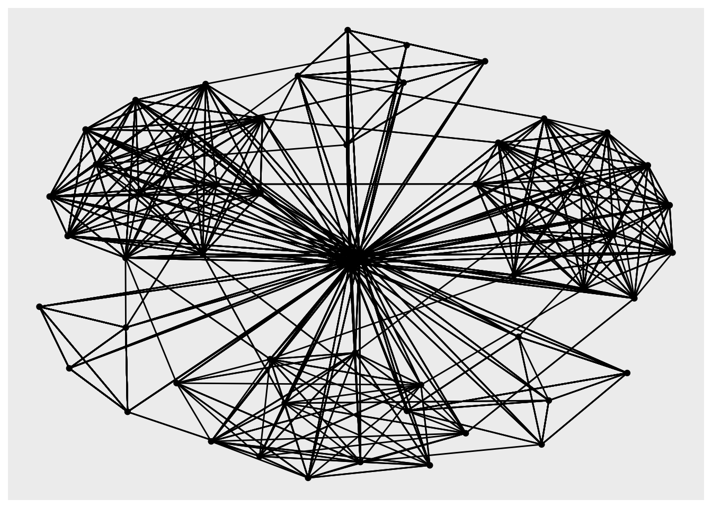
Things to learn from the code chunk above:
The basic plotting function is ggraph(), which takes the data to be used for the graph and the type of layout desired. Both of the arguments for ggraph() are built around igraph. Therefore, ggraph() can use either an igraph object or a tbl_graph object.
5.2 Changing the default network graph theme
The below code chunk uses theme_graph() to remove the x and y axes.
g <- ggraph(GAStech_graph) +
geom_edge_link(aes()) +
geom_node_point(aes())Using "stress" as default layoutg + theme_graph()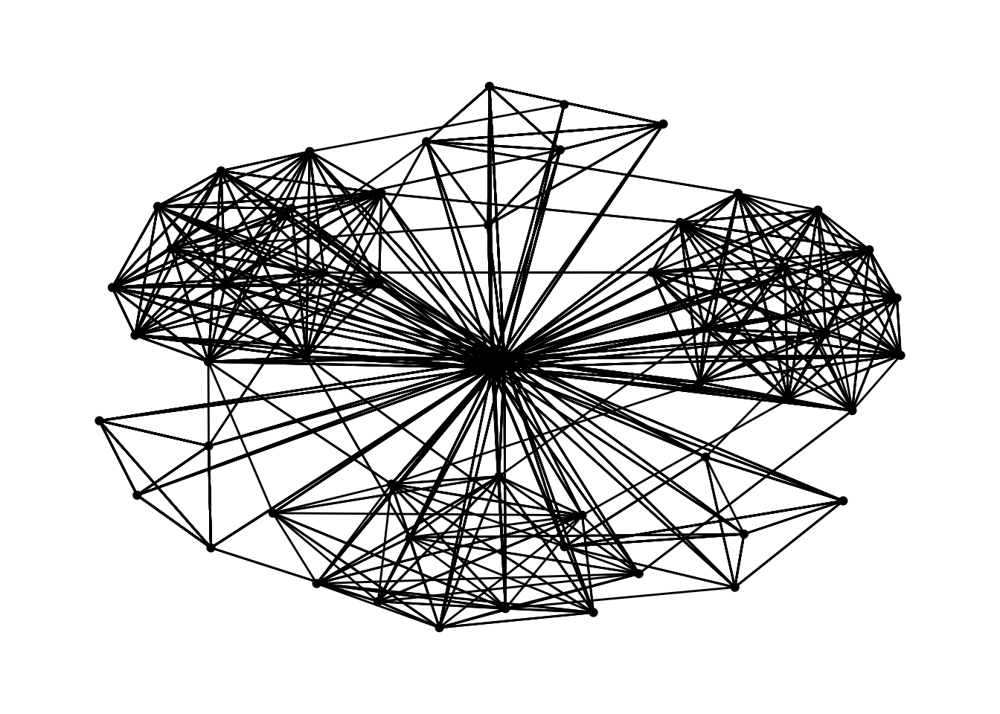
Things to learn from code-chunk above
ggraph introduces a special ggplot theme that provides better defaults for network graphs than the normal ggplot defaults.
theme_graph(), besides removing axes, grids, and border, changes the font to Arial Narrow (this can be overridden).The ggraph theme can be set for a series of plots with the
set_graph_style()command run before the graphs are plotted or by usingtheme_graph()in the individual plots.
5.3 Changing the coloring of the plot
Furthermore, theme_graph() makes it easy to change the coloring of the plot.
g <- ggraph(GAStech_graph) +
geom_edge_link(aes(colour = 'grey50')) +
geom_node_point(aes(colour = 'grey40'))
g + theme_graph(background = 'grey10',
text_colour = 'white')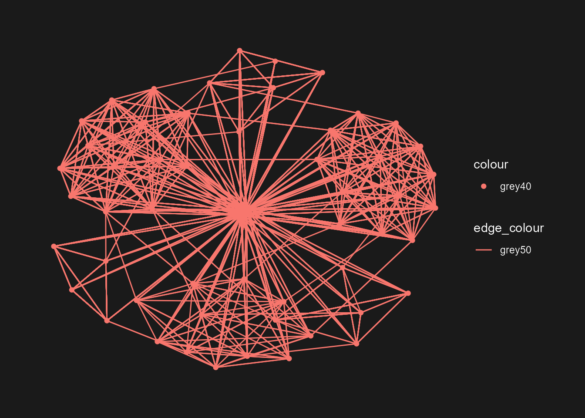
5.4 Working with ggraph’s layouts
ggraph support many layout for standard used, they are: star, circle, nicely (default), dh, gem, graphopt, grid, mds, spahere, randomly, fr, kk, drl and lgl. Figures below and on the right show layouts supported by ggraph().
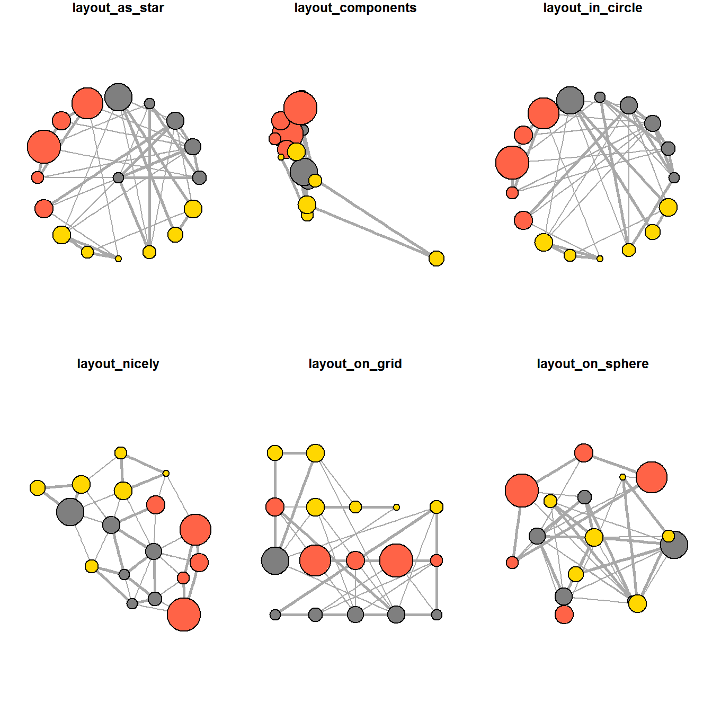
5.5 Fruchterman and Reingold layout
The code chunks below will be used to plot the network graph using Fruchterman and Reingold layout.
g <- ggraph(GAStech_graph,
layout = "fr") +
geom_edge_link(aes()) +
geom_node_point(aes())
g + theme_graph()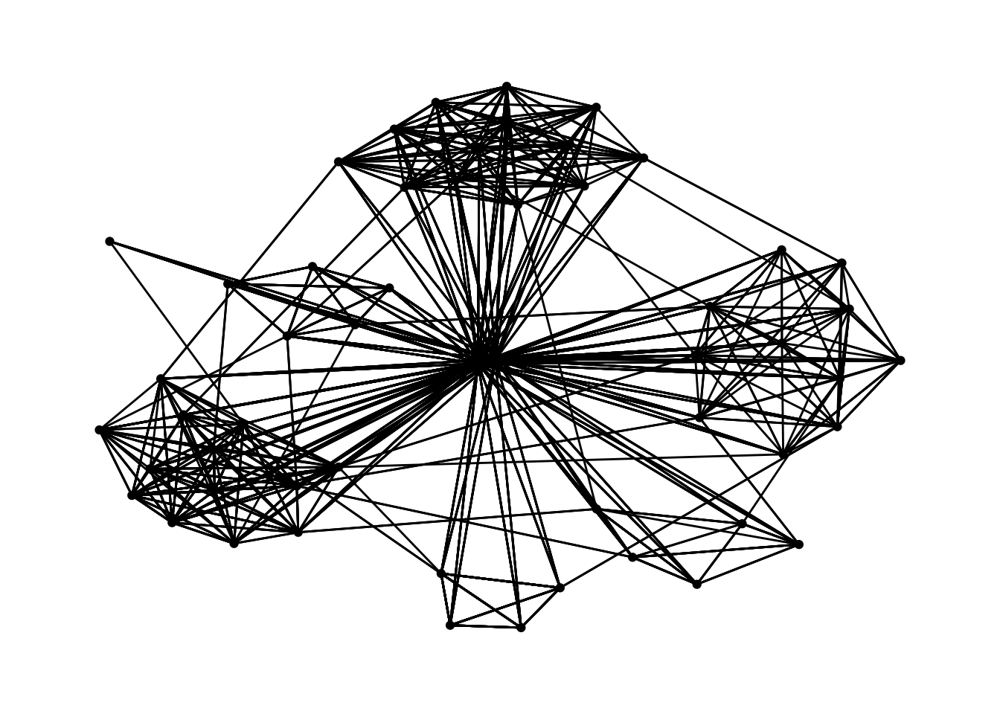
5.6 Modifying network nodes
In this section, we will colour each node by referring to their respective departments.
g <- ggraph(GAStech_graph,
layout = "nicely") +
geom_edge_link(aes()) +
geom_node_point(aes(colour = Department,
size = 3))
g + theme_graph()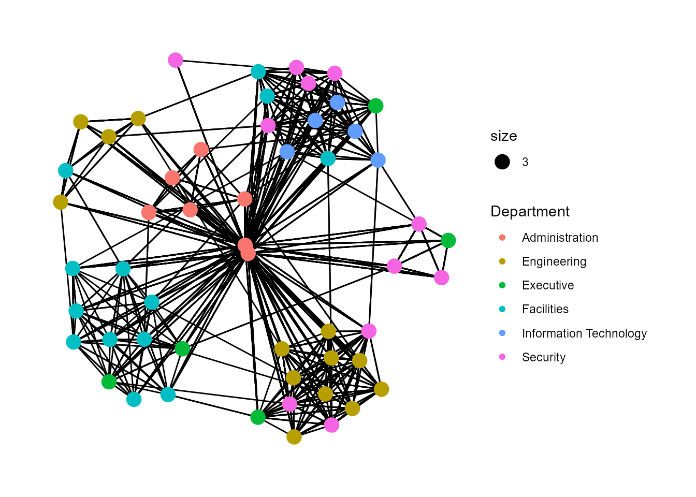
Things to learn from code chunk above)
geom_node_point is equivalent in functionality to geo_point of ggplot2. It allows for simple plotting of nodes in different shapes, colours and sizes. In the codes chnuks above colour and size are used.
5.7 Modifying edges
In the code chunk below, the thickness of the edges will be mapped with the Weight variable.
g <- ggraph(GAStech_graph,
layout = "nicely") +
geom_edge_link(aes(width=Weight),
alpha=0.2) +
scale_edge_width(range = c(0.1, 5)) +
geom_node_point(aes(colour = Department),
size = 3)
g + theme_graph()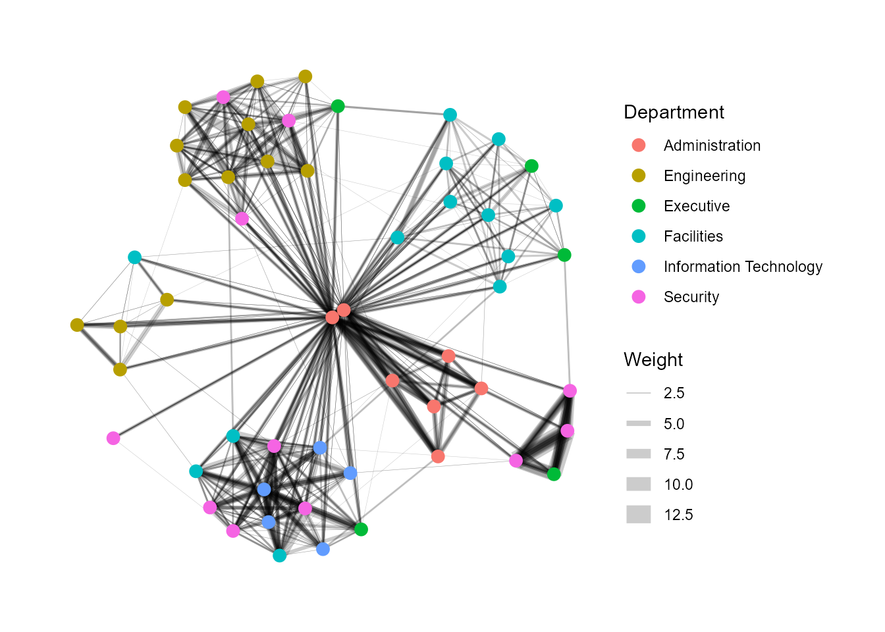
Things to learn from code chunk above
geom_edge_link draws edges in the simplest way - as straight lines between the start and end nodes. But, it can do more that that. In the example above, argument width is used to map the width of the line in proportional to the Weight attribute and argument alpha is used to introduce opacity on the line.
6 Creating facet graphs
Another very useful feature of ggraph is faceting. In visualising network data, this technique can be used to reduce edge over-plotting in a very meaning way by spreading nodes and edges out based on their attributes. In this section, you will learn how to use faceting technique to visualise network data.
There are three functions in ggraph to implement faceting, they are:
- facet_nodes() whereby edges are only draw in a panel if both terminal nodes are present here,
- facet_edges() whereby nodes are always drawn in al panels even if the node data contains an attribute named the same as the one used for the edge facetting, and
- facet_graph() faceting on two variables simultaneously.
6.1 Working with facet_edges()
In the code chunk below, facet_edges() is used.
set_graph_style()
g <- ggraph(GAStech_graph,
layout = "nicely") +
geom_edge_link(aes(width=Weight),
alpha=0.2) +
scale_edge_width(range = c(0.1, 5)) +
geom_node_point(aes(colour = Department),
size = 2)
g + facet_edges(~Weekday)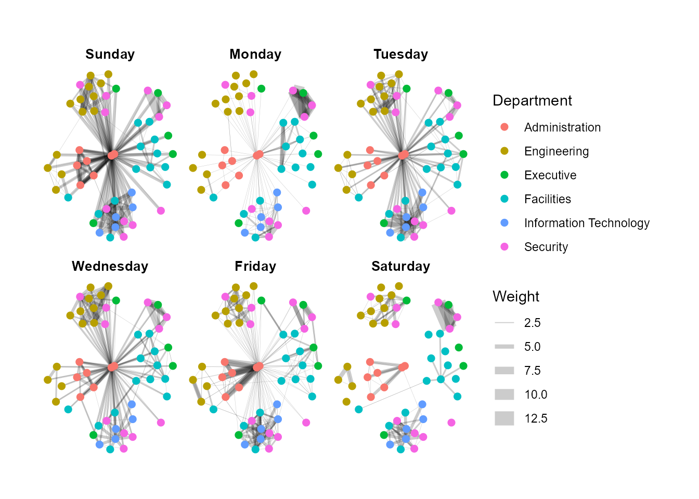
6.2 A framed facet graph
The code chunk below adds frame to each graph.
set_graph_style()
g <- ggraph(GAStech_graph,
layout = "nicely") +
geom_edge_link(aes(width=Weight),
alpha=0.2) +
scale_edge_width(range = c(0.1, 5)) +
geom_node_point(aes(colour = Department),
size = 2)
g + facet_edges(~Weekday) +
th_foreground(foreground = "grey80",
border = TRUE) +
theme(legend.position = 'bottom')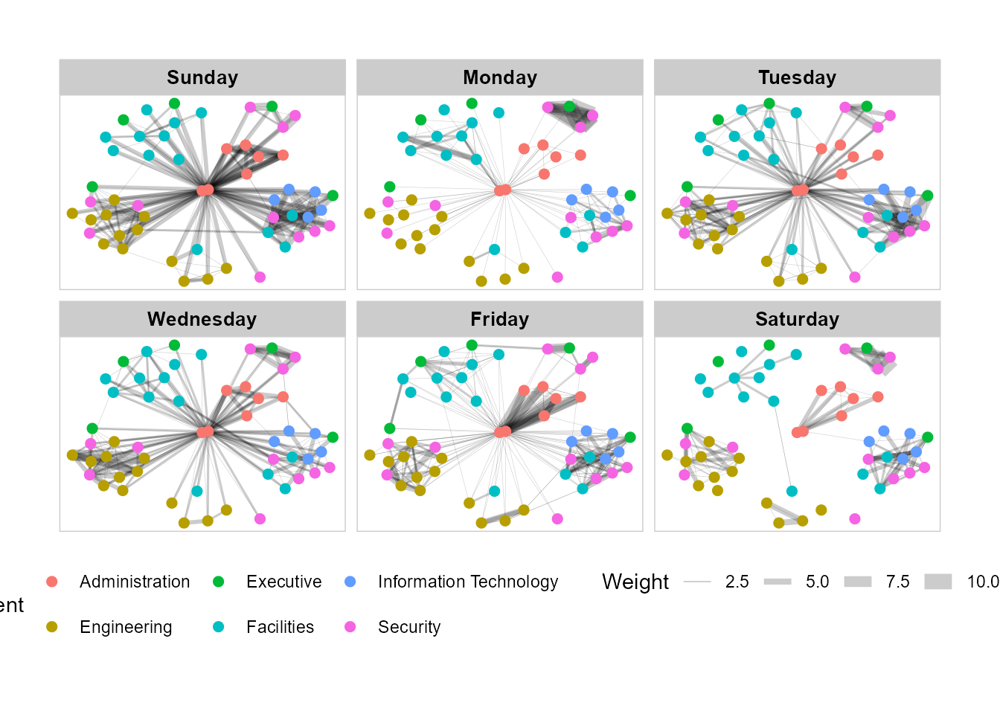
6.3 Working with facet_nodes()
In the code chunk below, facet_nodes() is used.
set_graph_style()
g <- ggraph(GAStech_graph,
layout = "nicely") +
geom_edge_link(aes(width=Weight),
alpha=0.2) +
scale_edge_width(range = c(0.1, 5)) +
geom_node_point(aes(colour = Department),
size = 2)
g + facet_nodes(~Department)+
th_foreground(foreground = "grey80",
border = TRUE) +
theme(legend.position = 'bottom')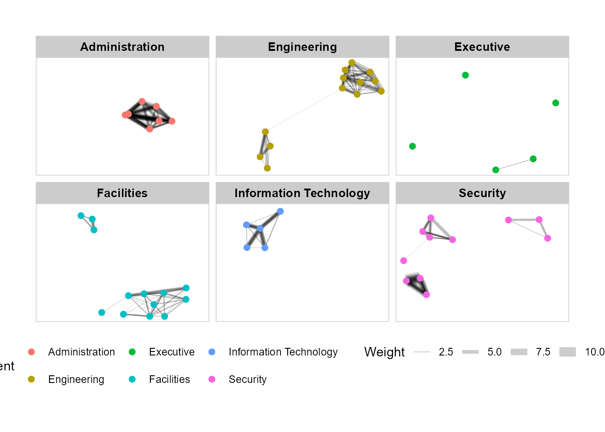
7 Network Metrics Analysis
7.1 Computing centrality indices
Centrality measures are a collection of statistical indices use to describe the relative important of the actors are to a network. There are four well-known centrality measures, namely: degree, betweenness, closeness and eigenvector. It is beyond the scope of this hands-on exercise to cover the principles and mathematics of these measure here.
g <- GAStech_graph %>%
mutate(betweenness_centrality = centrality_betweenness()) %>%
ggraph(layout = "fr") +
geom_edge_link(aes(width=Weight),
alpha=0.2) +
scale_edge_width(range = c(0.1, 5)) +
geom_node_point(aes(colour = Department,
size=betweenness_centrality))
g + theme_graph()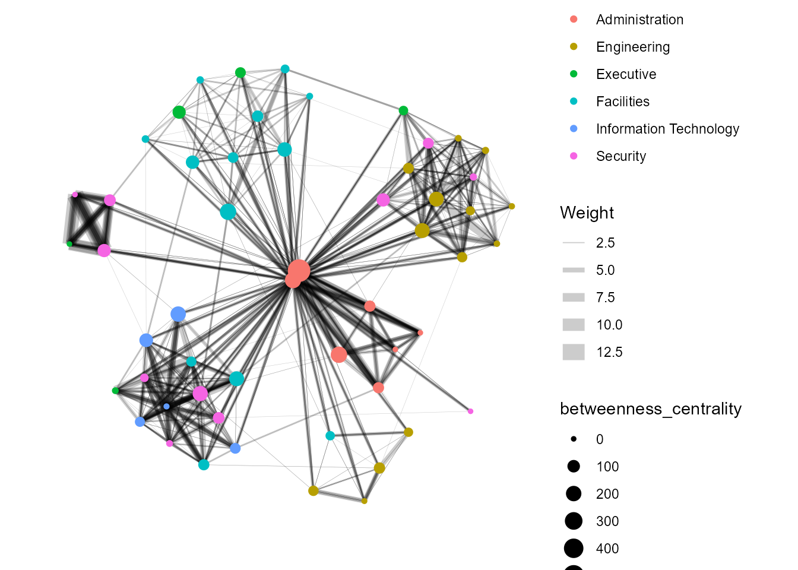
Things to learn from code chunk above
- mutate() of dplyr is used to perform the computation.
- the algorithm used, on the other hand, is the centrality_betweenness() of tidygraph.
7.2 Visualising network metrics
It is important to note that from ggraph v2.0 onward tidygraph algorithms such as centrality measures can be accessed directly in ggraph calls. This means that it is no longer necessary to precompute and store derived node and edge centrality measures on the graph in order to use them in a plot.
g <- GAStech_graph %>%
ggraph(layout = "fr") +
geom_edge_link(aes(width=Weight),
alpha=0.2) +
scale_edge_width(range = c(0.1, 5)) +
geom_node_point(aes(colour = Department,
size = centrality_betweenness()))
g + theme_graph()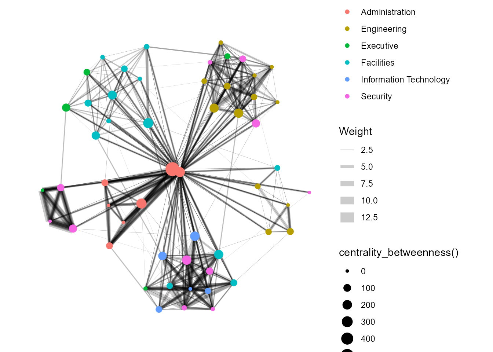
7.3 Visualising Community
tidygraph package inherits many of the community detection algorithms imbedded into igraph and makes them available to us, including Edge-betweenness (group_edge_betweenness), Leading eigenvector (group_leading_eigen), Fast-greedy (group_fast_greedy), Louvain (group_louvain), Walktrap (group_walktrap), Label propagation (group_label_prop), InfoMAP (group_infomap), Spinglass (group_spinglass), and Optimal (group_optimal). Some community algorithms are designed to take into account direction or weight, while others ignore it.
g <- GAStech_graph %>%
mutate(community = as.factor(
group_edge_betweenness(
weights = Weight,
directed = TRUE))) %>%
ggraph(layout = "fr") +
geom_edge_link(
aes(
width=Weight),
alpha=0.2) +
scale_edge_width(
range = c(0.1, 5)) +
geom_node_point(
aes(colour = community)) Warning: There was 1 warning in `mutate()`.
ℹ In argument: `community = as.factor(group_edge_betweenness(weights = Weight,
directed = TRUE))`.
Caused by warning in `cluster_edge_betweenness()`:
! At vendor/cigraph/src/community/edge_betweenness.c:503 : Membership vector will be selected based on the highest modularity score.g + theme_graph()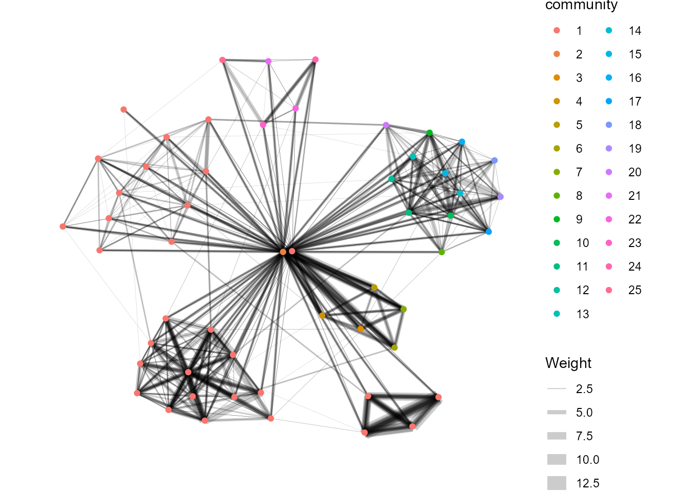
To improve visual interpretability, the community network above has been revised by using geom_mark_hull() of ggforce package.
g <- GAStech_graph %>%
activate(nodes) %>%
mutate(community = as.factor(
group_optimal(weights = Weight)),
betweenness_measure = centrality_betweenness()) %>%
ggraph(layout = "fr") +
geom_mark_hull(
aes(x, y,
group = community,
fill = community),
alpha = 0.2,
expand = unit(0.3, "cm"), # Expand
radius = unit(0.3, "cm") # Smoothness
) +
geom_edge_link(aes(width=Weight),
alpha=0.2) +
scale_edge_width(range = c(0.1, 5)) +
geom_node_point(aes(fill = Department,
size = betweenness_measure),
color = "black",
shape = 21)
g + theme_graph()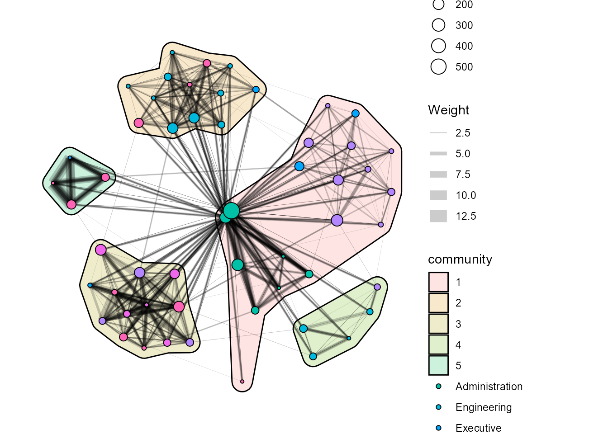
8 Building Interactive Network Graph with visNetwork
- visNetwork() is a R package for network visualization, using vis.js javascript library.
- visNetwork() function uses a nodes list and edges list to create an interactive graph.
- The nodes list must include an “id” column, and the edge list must have “from” and “to” columns.
- The function also plots the labels for the nodes, using the names of the actors from the “label” column in the node list.
- The resulting graph allows the following interaction elements
You can move the nodes and the graph will use an algorithm to keep the nodes properly spaced.
You can also zoom in and out on the plot and move it around to re-center it.
8.1 Data preparation
Before we can plot the interactive network graph, we need to prepare the data model by using the code chunk below.
GAStech_edges_aggregated <- GAStech_edges %>%
left_join(GAStech_nodes, by = c("sourceLabel" = "label")) %>%
rename(from = id) %>%
left_join(GAStech_nodes, by = c("targetLabel" = "label")) %>%
rename(to = id) %>%
filter(MainSubject == "Work related") %>%
group_by(from, to) %>%
summarise(weight = n()) %>%
filter(from!=to) %>%
filter(weight > 1) %>%
ungroup()`summarise()` has grouped output by 'from'. You can override using the
`.groups` argument.8.2 Plotting the first interactive network graph
The code chunk below will be used to plot an interactive network graph by using the data prepared.
visNetwork(GAStech_nodes,
GAStech_edges_aggregated)8.3 Working with layout
In the code chunk below, Fruchterman and Reingold layout is used.
visNetwork(GAStech_nodes,
GAStech_edges_aggregated) %>%
visIgraphLayout(layout = "layout_with_fr") 8.4 Working with visual attributes - Nodes
visNetwork() looks for a field called “group” in the nodes object and colour the nodes according to the values of the group field.
The code chunk below renames Department field to group.
GAStech_nodes <- GAStech_nodes %>%
rename(group = Department) When we rerun the code chunk below, visNetwork shades the nodes by assigning unique colour to each category in the group field.
visNetwork(GAStech_nodes,
GAStech_edges_aggregated) %>%
visIgraphLayout(layout = "layout_with_fr") %>%
visLegend() %>%
visLayout(randomSeed = 123)8.5 Working with visual attributes - Edges
In the code run below visEdges() is used to symbolise the edges.
- The argument arrows is used to define where to place the arrow.
- The smooth argument is used to plot the edges using a smooth curve.
visNetwork(GAStech_nodes,
GAStech_edges_aggregated) %>%
visIgraphLayout(layout = "layout_with_fr") %>%
visEdges(arrows = "to",
smooth = list(enabled = TRUE,
type = "curvedCW")) %>%
visLegend() %>%
visLayout(randomSeed = 123)8.6 Interactivity
In the code chunk below, visOptions() is used to incorporate interactivity features in the data visualisation.
The argument highlightNearest highlights nearest when clicking a node.
The argument nodesIdSelection adds an id node selection creating an HTML select element.
visNetwork(GAStech_nodes,
GAStech_edges_aggregated) %>%
visIgraphLayout(layout = "layout_with_fr") %>%
visOptions(highlightNearest = TRUE,
nodesIdSelection = TRUE) %>%
visLegend() %>%
visLayout(randomSeed = 123)